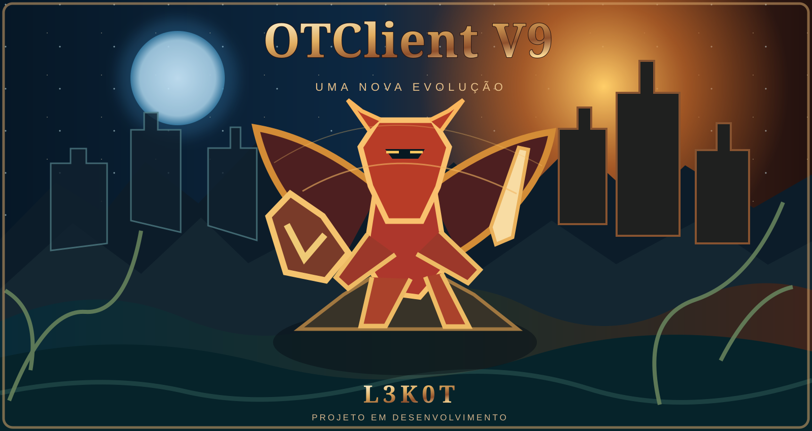
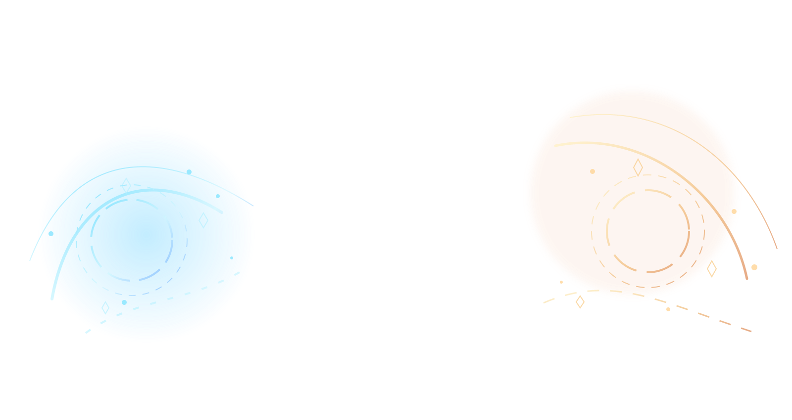
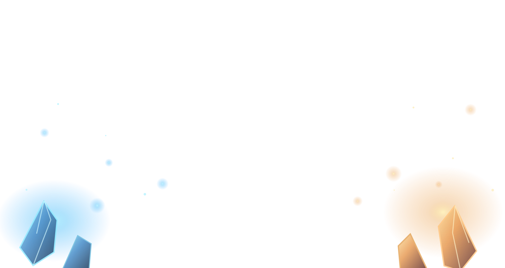
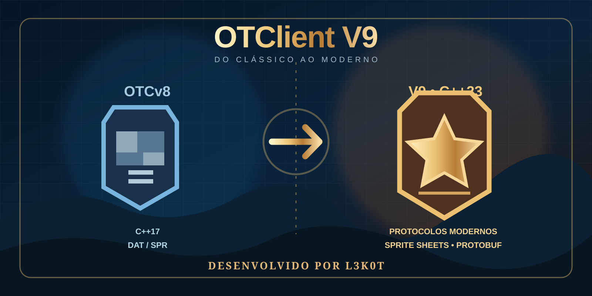

Core C++23
Compilação completa em C++23, melhorias de compatibilidade, CMake moderno e dependências organizadas.



ARTE INTERATIVA · PARALAXE 2.5DUse o mouse ou toque na imagem. A câmera é opcional.
O espírito do OTCv8 em uma base modernizada para C++23, com carregamento de sprites modernos, novos módulos e arquitetura preparada para protocolos do Tibia até 15.25 — ainda em validação.
Projeto em desenvolvimento. Apresentação ilustrativa, sem código-fonte nem downloads do cliente.
Avanços técnicos e sistemas integrados à base do OTCv8, com adaptações do OTClient Redemption onde necessário.
Compilação completa em C++23, melhorias de compatibilidade, CMake moderno e dependências organizadas.
ProtocolProfile, ProtocolRegistry e capacidades para lidar com diferentes gerações de Tibia.
Sprite Sheets compactadas, catálogo, appearances e renderização integrada ao cliente.
Cyclopedia, Bestiary, Bosstiary, Character Inspection, Taskboard e Soulseals.
Exaltation Forge, Wheel of Destiny, Weapon Proficiency, Monk e Attached Effects.
Reward Wall, Store moderna, Quick Loot, Stash, Health Circle, Analyser e interfaces adaptadas.
O V9 incorpora uma nova rota de carregamento gráfico para os formatos das versões modernas do Tibia, preservando o caminho legado para clientes antigos.

Em vez de depender apenas dos arquivos clássicos, o cliente passa a reconhecer estruturas gráficas modernas.
A implementação na source não é o mesmo que comprovação de funcionamento em jogo. Este quadro mostra os alvos reais do desenvolvimento.
Geração clássica. Meta: preservar compatibilidade; testes de regressão ainda pendentes.
| Protocolo | Objetivo | Estado |
|---|---|---|
| 8.60 | Base clássica | Regressão pendente |
| 10.98 | Base de transição | Regressão pendente |
| 15.11 | Integração com Canary | Validação em andamento |
| 15.25 | Recursos modernos | Desenvolvimento e testes |
Clique em Star ⭐ no repositório público para favoritar o OTClient V9. Ative também Watch para acompanhar atualizações, novidades e futuros anúncios de versão.
A primeira versão BETA será divulgada após as validações necessárias.